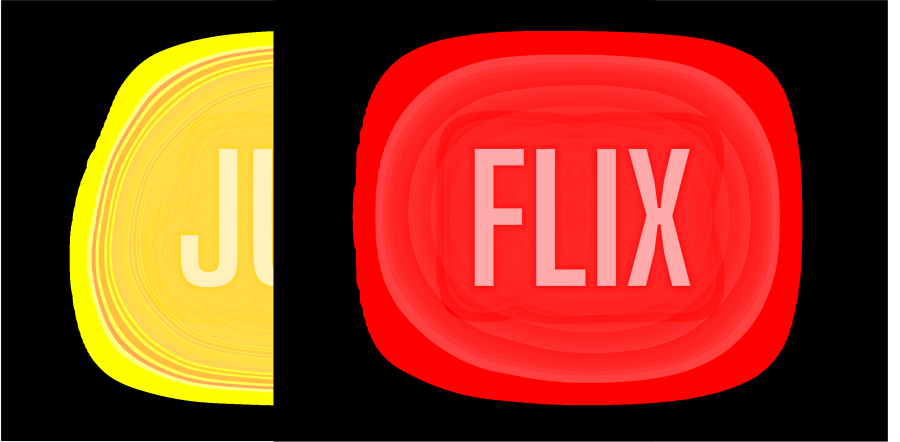

<div class="navbar" [class.scrolled]="scrolled">
  <div class="navOpciones">
    
    <a class="textInicio" routerLink="/inicio">Inicio</a>
    <a class="textInicio" routerLink="/favoritos">Favoritas</a>

  </div>
  <i *ngIf="logoBuscar" class="fa-solid fa-magnifying-glass lupa"></i>
</div>